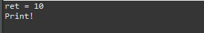
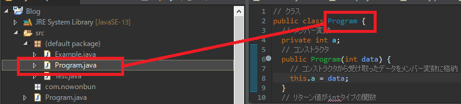
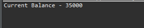

[Java] 7. クラスを作成する方法(コンストラクタを作成方法)
こんにちは。明月です。
この投稿はクラスを作成する方法(コンストラクタを作成方法)に関する説明です。
Javaではクラスとは実行するための最小単位の動作する形です。我々がmain関数を利用してプログラムを実行しましたが、構造で確認すればすべてclassのキーワードでスタックを囲まれました。
// クラス領域
public class Program {
// main関数
public static void main(String[] args) {
// ソース作成。
}
}
上の例はProgramのクラスでmain関数を作成して実行する例のソースです。 プログラムでmain関数を実行することでは別にクラスが必要なことではないですが、基本構造としてクラスをなしで関数を作成することがJavaでは不可能です。
改めてまとめると、Javaはクラスがなしでプログラムを作成することができません。
クラス内部では作成するのはコンストラクタ、関数を作成することができます。そしてクラスのサイズを決定するメンバー変数を設定することができます。
| クラス要素 | 説明 |
|---|---|
| コンストラクタ | クラスの初期処理及び関連機能処理 |
| メンバー変数 | フィールドという呼ばれるグローバル変数 |
| 関数 | メソッド |
クラスで上の属性を使うためには必ずアクセス修飾子が必要です。アクセス修飾子は別途の投稿で説明します。
一応、変数はprivate、関数はpublicで設定します。
// クラス
public class Program {
// メンバー変数
private int a;
// コンストラクタ
public Program(int data) {
// コンストラクタから受け取ったデータをメンバー変数に格納
this.a = data;
}
// リターン値がintタイプの関数
// voidがなければ必ずreturnが必要
public int func() {
// 変数名の前にthisを付けるとメンバー変数
// つまり、メンバー変数aをリターンする。
return this.a;
}
// リターンが必要ない関数
// リターン値がvoidなのでreturnが必要ない。
public void print() {
// コンソール出力
System.out.println("Print!");
}
// main関数
public static void main(String... args) {
// Programインスタンス生成
Program p = new Program(10);
// 変数p(Programクラス)のfunc関数を呼び出してintタイプの値をリターンを受け取る。
int ret = p.func();
// コンソール出力
System.out.println("ret = " + ret);
// 変数p(Programクラス)のprint関数を呼び出す。
p.print();
}
}

プログラムを実行するとデバッガーは始めにstatic main関数を探します。関数でstaticキーワードが付けると内部関数ではないと思えばよいです。詳細に関しては別の投稿で説明します。
つまり、main関数は外部関数なのでProgramインスタンスが生成することは関係なく、呼び出すことができます。
Programのクラスをインスタンスを生成します。それはnewキーワードを利用します。newキーワードはメモリ割り当てと関係がある内容なのでこれも別途の投稿で説明します。
インスタンスが生成する時にはクラスのコンストラクタが呼び出します。
コンストラクタはリターンタイプが決めてないし、クラス名と同じ名の関数名に作成します。なのでnewでインスタンスを生成する時にパラメータを個数とタイプを合せなければならないです。
上の例だと、コンストラクタでthis.aをしてメンバー変数のaにパラメータ値を格納しました。
そしてまたmain関数に戻りましょう。インスタンス生成は変数pに割り当てます。
pという変数にアクセス可能なことはpublicのアクセス制限が設定されているものです。つまりprivateの変数はmain関数では操作ができません。
なので、main関数で呼び出せることはfunc関数とprint関数だけです。
func関数ではthis.aを利用してクラス内部のメンバー変数aの値をリターンします。
main関数でfunc関数から受け取ったデータをコンソールに出力するとコンストラクタで設定した10の値が表示されます。
main関数で最後ステップでprint関数を呼び出します。
print内部ではコンソール出力ステップしかないので、コンソールにPrint!ということが表示されます。
Programクラスでnewキーワードを利用して割り当てしてないもの、つまりインスタンス生成してないものではfunc関数やprint関数を使えません。インスタンス生成なしで使える関数はstaticが付けている関数だけです。
クラスを作成する時にはクラス名とファイル名が一致しなければならないです。

クラスは生成する単位はクラスを目的が詳細にあるオブジェクトとして作成しなければならないです。(OOPの四つの特徴)
例として家計の目的を持っているクラスを生成しましょう。
import java.util.List;
import java.util.ArrayList;
// クラス
public class Privatefinance {
// メンバー変数
// 入金リスト
private List<Integer> input;
// 出金リスト
private List<Integer> output;
// コンストラクタ
public Privatefinance() {
// リストを割り当て
this.input = new ArrayList<>();
this.output = new ArrayList<>();
}
// 入金する。
public void input(int money) {
// メンバー変数に金額を追加
this.input.add(money);
}
// 出金する。
public void output(int money) {
// メンバー変数に金閣を追加
this.output.add(money);
}
// 計算する。
public int calculator() {
// 結果のための変数
int sum = 0;
// リストに格納されているすべての入金額を足す。
for (int i = 0; i < input.size(); i++) {
sum += input.get(i);
}
// リストの格納されているすべての出金額を引く。
for (int i = 0; i < output.size(); i++) {
sum -= output.get(i);
}
// 結果をリターン
return sum;
}
// main 関数
public static void main(String... args) {
// Privatefinanceのインスタンスを生成
Privatefinance p = new Privatefinance();
// 5万円を入金
p.input(50000);
// 2千円使う。
p.output(2000);
// 3千円使う。
p.output(3000);
// 1万円使う。
p.output(10000);
// 現在の残額は？
System.out.println("Current Balance - " + p.calculator());
}
}

上のクラスは家計簿の目的を持っているクラスです。機能としては入金、出金して残額を計算する機能しかないです。
でも、内訳リストの作ることもできるし、利子計算も入れる機能もいれて、クラス一つのことでお金を管理できる家計簿オブジェクトを作ることができます。
しかし、急にここで家計ではなく、料理レシピの関係なデータを入れることにするとクラスの目的性が可笑しくなります。作ることにすればできないことではありませんが、OOPの特徴や目的性などにはよくない開発方法です。
そのことに関しては別途の投稿で詳細に確認しましょう。
ここまでクラスを作成する方法(コンストラクタを作成方法)に関する説明でした。
ご不明なところや間違いところがあればコメントしてください。
- [Java] 15. 列挙型(バイナリデータビット演算子の使用例)2019/08/23 19:46:10
- [Java] 14. オブジェクト指向プログラミング(OOP)の4つ特性(カプセル化、抽象化、継承、多相化)2019/08/22 20:08:37
- [Java] 13. 抽象クラス(abstract)と継承禁止(final)2019/08/22 00:06:20
- [Java] 12. インタフェース(interface)2019/08/20 23:46:23
- [Java] 11. StringのhashCodeとequals、そしてtoStringの再定義(override)2019/08/20 00:42:04
- [Java] 10. メモリの割り当て(stackメモリとheapメモリ、そしてnew)とCall by reference(ポインタによる参照)2019/08/07 20:53:34
- [Java] 9. アクセス修飾子とstatic2019/08/06 20:22:48
- [Java] 8. クラスの継承とthis、superキーワードの使い方2019/08/05 23:22:58
- [Java] 7. クラスを作成する方法(コンストラクタを作成方法)2019/08/02 22:45:42
- [Java] 6. 関数の使い方(関数のオーバーロードと再帰的な方法について)2019/08/01 20:40:40
- [Java] 5. 配列とリスト(List)、マップ(Map)の使い方2019/07/26 23:25:58
- [Java] 4. 制御文2019/07/25 23:37:36
- [Java] 3. 演算子2019/07/25 23:38:36
- [Java] 2. 変数と定数の宣言方法、そして原始データタイプとクラスデータタイプの差異2019/07/24 23:12:32
- [Java] 1. Javaとは？、Javaインストール、Eclipseインストール2019/07/24 23:03:21
- [Design pattern] 2-1. アダプターパターン(Adapter pattern)2021/10/26 19:12:40
- [Project design] プログラム最終テスト - ST(System test(Standard, Scenario))2021/10/26 19:10:07
- [Project design] プログラム結合テスト - IT(Integration test)2021/10/25 20:12:17
- [Python] Seleniumライブラリを使う方法(自動ウェブテスト、ウェブスクレイピング)2021/10/25 19:29:00
- [Design pattern] 1-5. プロトタイプパターン(Prototype pattern)2021/10/22 19:35:45
- [Project design] プログラム検証とテスト - Unitテスト2021/10/22 19:34:09
- [C#] 57. コーティング規約2021/10/21 18:57:02
- [C#] 56. 値の初期化及び基本データ値(default)を設定する方法、そして原始データのnull処理、?と??の使い方2021/10/21 18:54:41
- [C#] 55.namespaceとusing、そしてpartialの使い方2021/10/21 18:51:39
- [C#] 54. Reflection機能を使い方 - Attribute2021/10/20 19:29:31
- [Project design] プログラム制作(コーディング) - クラス作成方法2021/10/20 19:28:09
- [C#] 53. Reflection機能を使い方 - Propertyとevent2021/10/19 21:02:58
- [Project design] プログラム制作(コーディング) - 関数作成方法2021/10/19 21:01:32
- [CentOs] ジェンキンス(Jenkins)をインストールする方法2021/10/18 18:28:58
- [Project design] 詳細設計(インターフェース設計と抽象化作業)2021/10/18 18:23:15